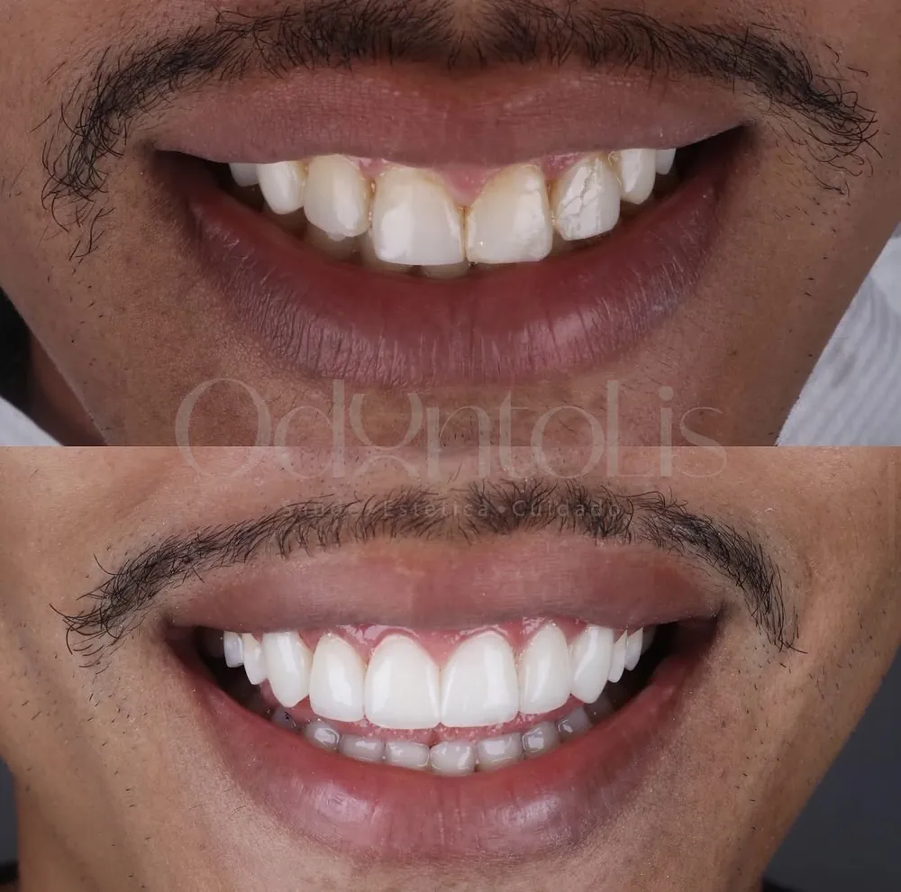
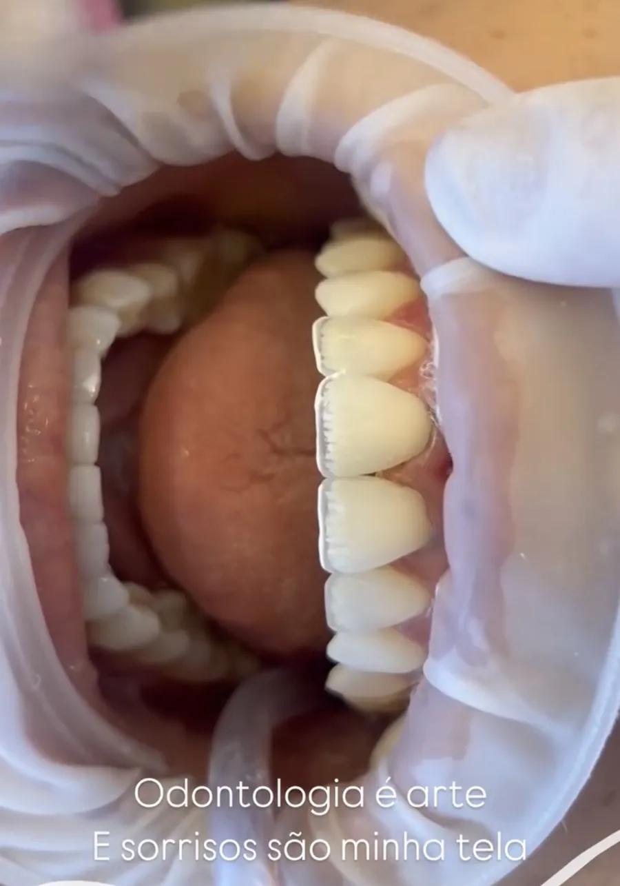
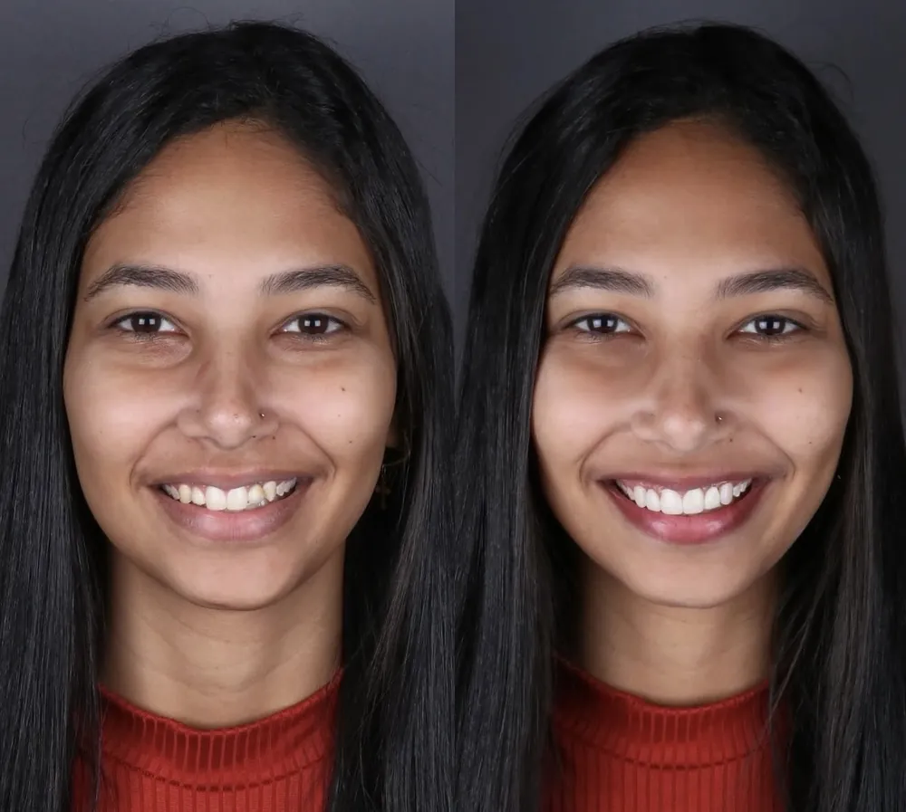
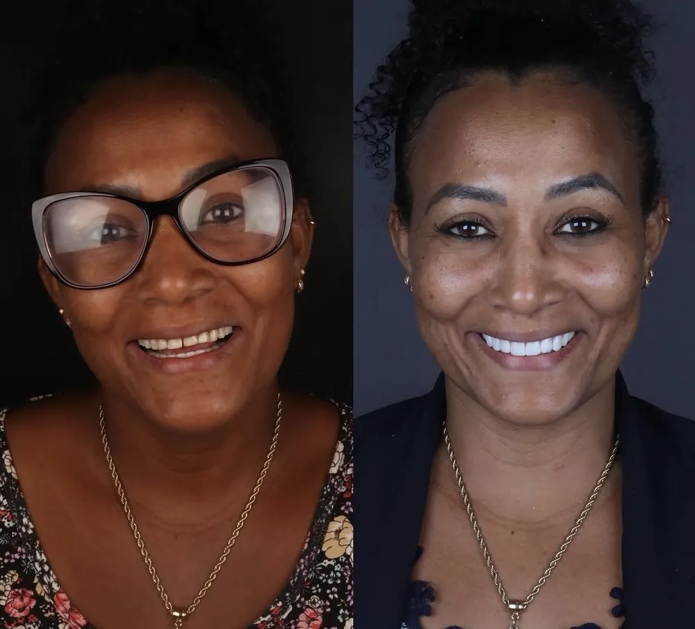
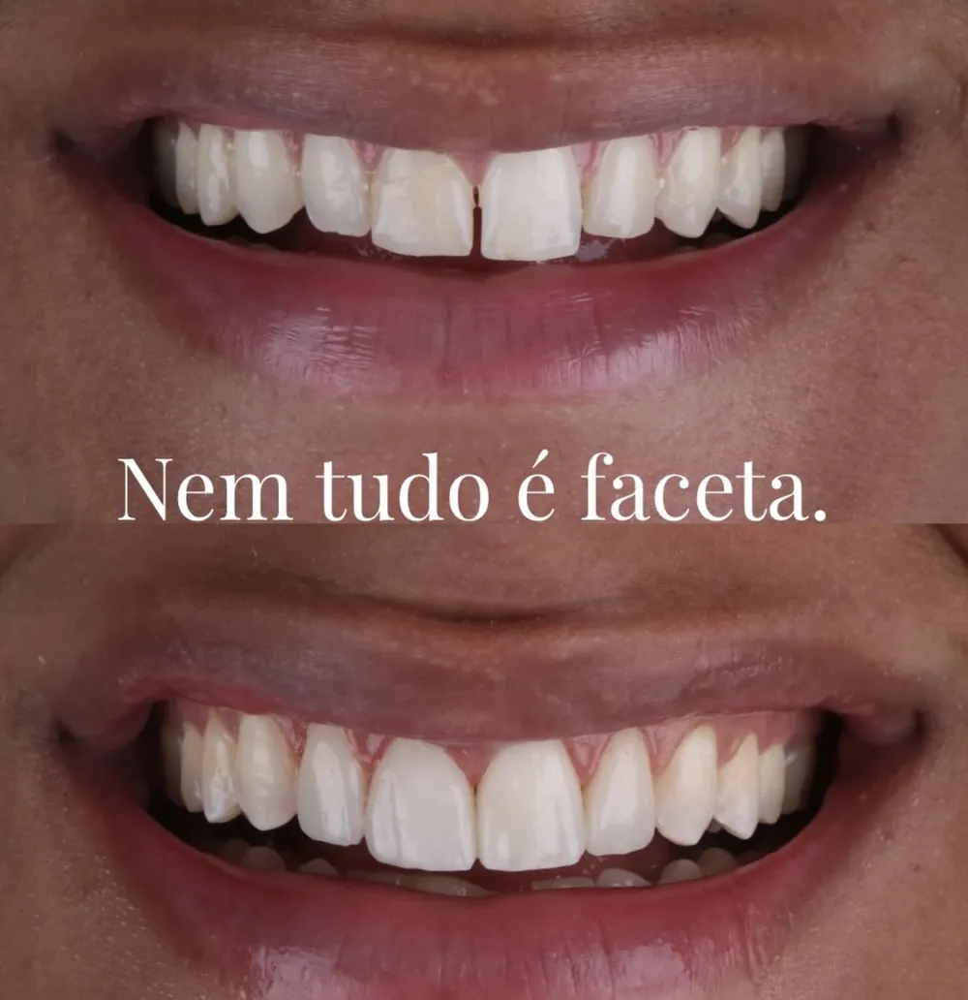
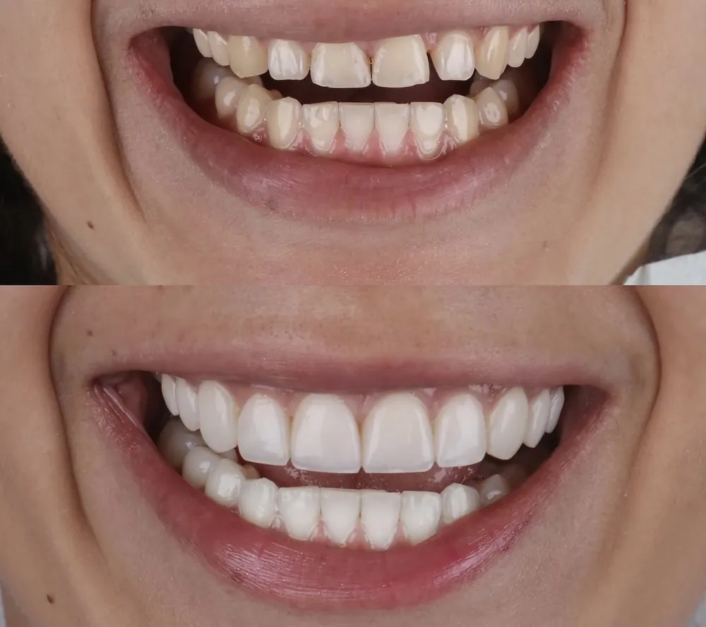
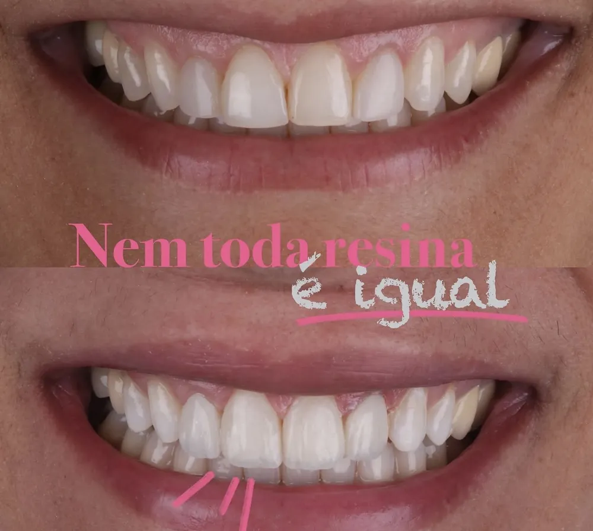

Seu sorriso pode mudar sem desgastar seus dentes.
Com a resina composta, a Dra. Giovana Canto devolve sorrisos naturais em casos que muita gente acha que só se resolvem com faceta.
- Técnica conservadora
- Resultado natural
- Planejamento individual
em resina

Sorrisos reais,pacientes reais

Resina compostaAntes de pensar em desgastar, pense em resina.
Dentes escurecidos, pequenos, desalinhados, com espaços ou desgastados. Muitas vezes o que parece pedir uma faceta pode ser resolvido com resina composta, uma técnica feita à mão, camada por camada, que respeita o seu dente.
-
01
Mínimo ou nenhum desgaste
Sempre que possível, o dente natural é preservado.
-
02
Natural, não artificial
Cor e textura escolhidas para combinar com você, sem aquele aspecto de “dentão branco”.
-
03
Reparável e acessível
Ajustes e manutenções são simples e o investimento costuma ser menor.
A indicação ideal para o seu caso só é definida na avaliação.
Descobrir se é o meu casoSorrisos que voltaram a aparecer.
Casos reais atendidos pela Dra. Giovana. Arraste para ver mais.





Dra. Giovana Canto
Cirurgiã-dentista · OdontoLis
“Odontologia é arte, e sorrisos são minha tela.”
À frente da OdontoLis, em Feira de Santana, a Dra. Giovana se dedica à odontologia estética com um olhar conservador: transformar o sorriso preservando ao máximo o que é seu. Cada caso é planejado individualmente, respeitando o formato do rosto, o tom de pele e a personalidade de cada paciente.
Do primeiro contato ao novo sorriso.
-
1
Preencha o formulário
Leva menos de 1 minuto. Nossa equipe recebe seus dados e fala com você pelo WhatsApp.
-
2
Avaliação personalizada
A Dra. Giovana avalia seu sorriso, entende o que te incomoda e indica o melhor caminho.
-
3
Plano e transformação
Você recebe um plano claro, com etapas e investimento, e começa a mudança com segurança.
Vamos descobrir o que o seu sorriso precisa?
Preencha seus dados e nossa equipe entra em contato pelo WhatsApp para encontrar o melhor horário para você.
- Atendimento em Feira de Santana · BA
- Retorno rápido pelo WhatsApp
- Seus dados ficam protegidos
Recebemos seus dados!
Estamos te levando para o WhatsApp. Se não abrir automaticamente, toque no botão abaixo.
Abrir WhatsAppAntes de agendar.
Qual a diferença entre resina e faceta de porcelana?
Na resina composta o material é aplicado diretamente no dente e esculpido na própria consulta, normalmente com pouco ou nenhum desgaste. A faceta de porcelana é confeccionada em laboratório e geralmente exige preparo do dente. As duas têm indicação, e na avaliação a Dra. Giovana explica qual faz mais sentido para você.
A resina fica natural?
Sim. A cor, o formato e a textura são escolhidos de acordo com o seu rosto e o seu tom de pele. O objetivo é um sorriso bonito que pareça seu, não artificial.
Quanto tempo dura?
A durabilidade depende dos cuidados em casa, dos hábitos (como ranger os dentes) e das manutenções periódicas. Uma das vantagens da resina é que ela pode ser reparada e polida com facilidade.
Dói? Precisa de anestesia?
Na maioria dos casos o procedimento é tranquilo e confortável. Quando necessário, a anestesia é feita para que você não sinta nada.
Quanto custa?
O investimento depende de quantos dentes serão tratados e da complexidade do caso. Por isso o primeiro passo é a avaliação, em que você recebe um plano completo com valores e formas de pagamento.